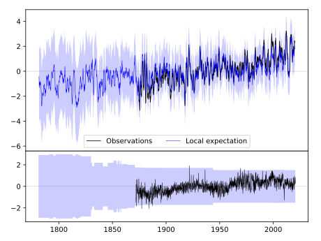
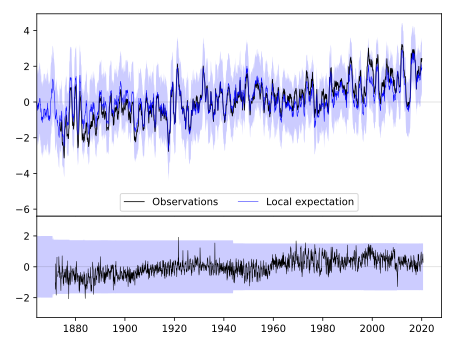
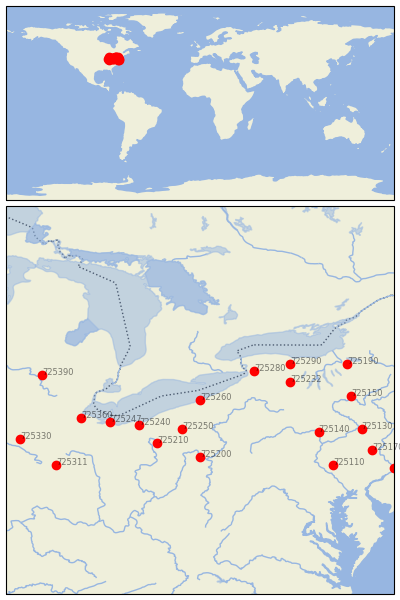

ERIE WSO AP [USA]


| Neighbour | Name | Country | Distance | Lon/Lat | Years |
|---|
| 725260 | ERIE WSO AP | USA | 0 | -80.2, 42.1 | 1871-2020 |
| 725250 | YOUNGSTOWN | USA | 98 | -80.7, 41.3 | 1943-2020 |
| 725280 | BUFFALO NIAGARA INTL | USA | 151 | -78.7, 42.9 | 1831-2020 |
| 725240 | CLEVELAND/CLE------- | USA--------- | 161 | -81.9, 41.4 | 1947-2020 |
| 725210 | AKRON/AKRON-CANTON | USA | 166 | -81.4, 40.9 | 1948-2020 |
| 725200 | PITTSBURGH, PENNSYLV | USA | 177 | -80.2, 40.5 | 1870-2020 |
| 725232 | DANSVILLE | USA | 212 | -77.7, 42.6 | 1893-2019 |
| 725247 | SANDUSKY, OHIO | USA | 217 | -82.7, 41.5 | 1877-1990 |
| 725290 | ROCHESTER INTL AP | USA | 232 | -77.7, 43.1 | 1830-2020 |
| 725360 | TOLEDO | USA | 278 | -83.5, 41.6 | 1871-2020 |
| 725140 | WILLIAMSPORT RGNL AP | USA | 291 | -76.9, 41.2 | 1873-2020 |
| 725150 | BINGHAMTON GREATER A | USA | 346 | -76.0, 42.2 | 1890-2020 |
| 725190 | SYRACUSE WSO AP | USA | 353 | -76.1, 43.1 | 1843-2020 |
| 725110 | LEBANON 2 W | USA | 368 | -76.5, 40.3 | 1888-2019 |
| 725390 | LANSING------------- | USA--------- | 369 | -84.6, 42.8 | 1864-2020 |
| 725130 | WILKES-BARRE-------- | USA--------- | 383 | -75.7, 41.3 | 1949-2020 |
| 725311 | SIDNEY | USA | 389 | -84.2, 40.3 | 1883-1980 |
| 725170 | ALLENTOWN AP | USA | 429 | -75.4, 40.7 | 1887-2020 |
| 725330 | FORT WAYNE | USA | 433 | -85.2, 41.0 | 1887-2020 |
| 725111 | TRENTON | USA | 498 | -74.8, 40.2 | 1866-1980 |